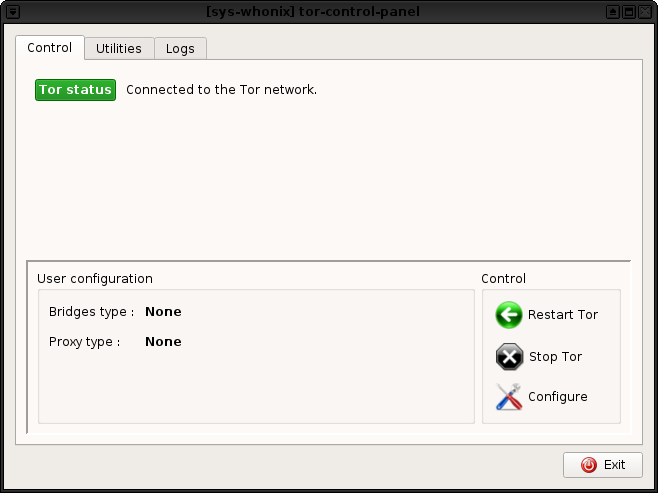
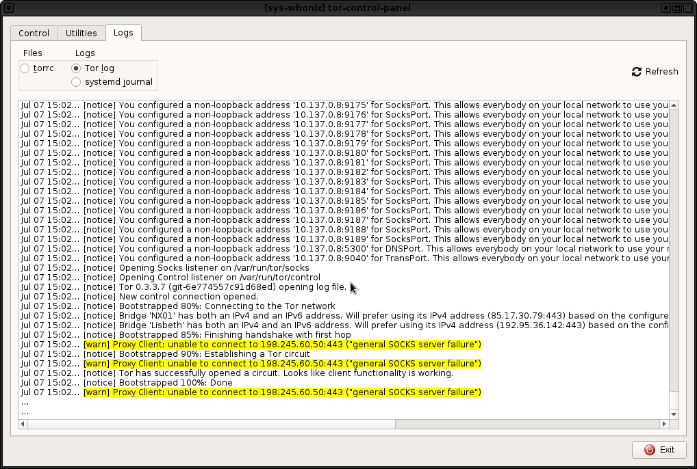
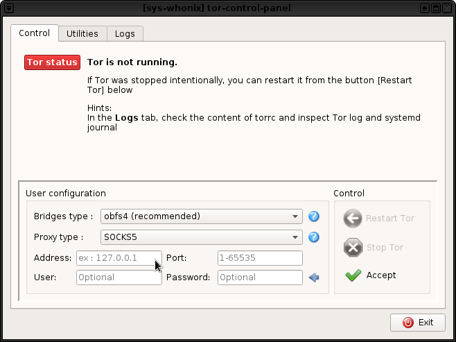
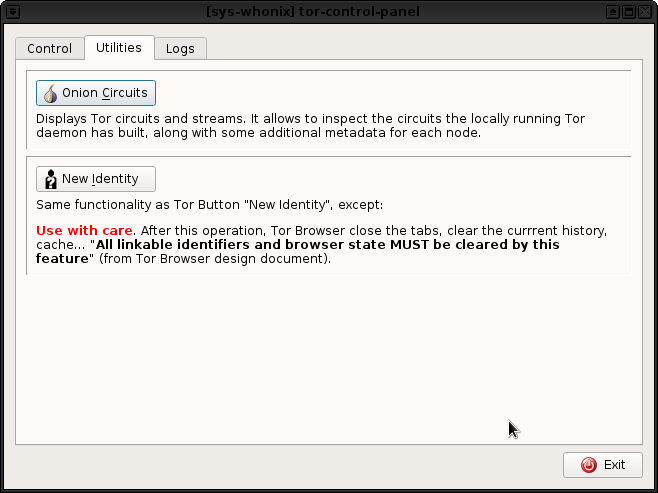

Tor start, stop, control, logs, utilities
Screenshots



Issues
- https://forums.whonix.org/t/tor-circuit-switched-off/8286/3
- https://github.com/QubesOS/qubes-issues/issues/6525
- https://forums.whonix.org/t/tor-controller-gui-tor-control-panel/5444/84 / https://www.reddit.com/r/Whonix/comments/mqxcwy/keep_losing_tor_connection/
- Later when Whonix starts using wayland, the GUI part needs to run as user while actions that require root access need to be outsourced to separate command line only scripts since wayland prohibits GUI applications running as with root rights.
See Also
Forum Discussion
Most of the development discussions can be found in this forum post.
Categories: Documentation